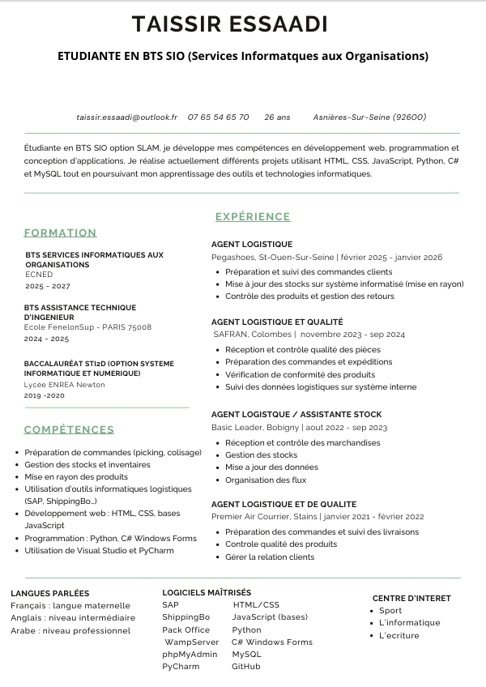

CURRICULUM VITAE
Cette page permet de consulter mon CV ainsi que les compétences, expériences et objectifs développés dans le cadre de mon parcours en BTS SIO option SLAM.

Actuellement étudiante en BTS SIO option SLAM, je m’intéresse particulièrement au développement web, à la conception d’applications et aux technologies numériques.
Mon objectif est de continuer à développer mes compétences techniques tout en enrichissant progressivement mon expérience professionnelle dans le domaine de l’informatique.
Télécharger le CV